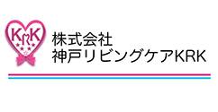

こんにちは世界！
Rails Girls が再び大阪にやってきます！二日間のワークショップの間に、Ruby on Railsのすてきな世界を体験してみませんか？ワークショップは無料です。
Hello world!
Rails Girls comes to Osaka! During the free two-day workshop we'll dive into the magical world of Ruby on Rails.
概要 コーチに教えてもらいながらプログラムを設計して、プロトタイプを作り、コーディングします。
必要なもの 自分のノートパソコン、やる気とキラリと光るイマジネーションを持ってきてください！
コーチの募集を締め切らせていただきました。 たくさんのご応募、ご協力、ありがとうございました。
| 19:30 - 21:00 |
インストール・デーご自分のノートパソコンをお持ちください。それぞれのパソコンにRubyとRailsをインストールし、Rubyプログラミングの最初の一歩をコーチとともに始めてみましょう。インストールできている方は、この日は参加しなくても大丈夫です。 |
|---|
| 9:00 - 10:00 |
レジストレーション |
|---|---|
| 10:00 - 10:30 |
オープニング |
| 10:30 - 11:00 |
Rubyて何？ Railsて何？（仮） |
| 11:00 - 12:30 |
ワークショップ |
| 12:30 - 14:00 |
ランチ |
| 14:00 - 17:00 |
ワークショップ |
| 17:00 - 17:30 |
ライトニングトークス |
| 18:00 - 20:00 |
アフター・パーティ参加者、コーチ、スタッフによるパーティです。ワークショップで聞き損ねたことやRubyやRailsのこと、ステップアップの方法など、コーチに気軽に質問してみましょう。 |
定員に達したため、参加申し込みは締め切らせていただきました。ご応募ありがとうございました。参加者のみなさまには随時ご連絡いたしますのでお待ちください。
会場:
Yahoo! JAPAN 大阪支社 地図
大阪府大阪市北区小松原町2-4 大阪富国生命ビル
Rails Girls Osaka はすばらしいパートナーとの共同開催です。（順不同）
 ヤフー株式会社
ヤフー株式会社
日本最大級のインターネットの総合情報サイト「Yahoo! JAPAN」を運営するヤフー株式会社は、ITを使って人々や社会のさまざまな「課題」を解決して いく「課題解決エンジン」として、いろいろな取り組みを進めています。
 株式会社アルメディア・ネットワーク では技術者集団として開発・インフラネットワーク・医療情報の3分野にて顧客満足を私達の存在価値として日々業務に努めています。2010年よりRubyの取組を強化し、関西地方で”Rubyビジネス推進協議会”設立・運営に寄与貢献しています。そして今後はRubyコミュニティと一緒に成長して行きたい考えています。
株式会社アルメディア・ネットワーク では技術者集団として開発・インフラネットワーク・医療情報の3分野にて顧客満足を私達の存在価値として日々業務に努めています。2010年よりRubyの取組を強化し、関西地方で”Rubyビジネス推進協議会”設立・運営に寄与貢献しています。そして今後はRubyコミュニティと一緒に成長して行きたい考えています。
 株式会社Ruby開発は、様々な志を持ちながら、Rubyを中心として集まったメンバーが、それぞれの特徴を活かした設計開発を行っている企業です。現在は、Ruby on Railsを用いた開発に積極的に取り組んでいます。将来的には、Web系(Ruby on Rails)・組込系(mruby)など、様々なRubyを扱う企業を目指しています。また、Railsをやりたい社員へのスキル形成サポートも行なっています。
株式会社Ruby開発は、様々な志を持ちながら、Rubyを中心として集まったメンバーが、それぞれの特徴を活かした設計開発を行っている企業です。現在は、Ruby on Railsを用いた開発に積極的に取り組んでいます。将来的には、Web系(Ruby on Rails)・組込系(mruby)など、様々なRubyを扱う企業を目指しています。また、Railsをやりたい社員へのスキル形成サポートも行なっています。
 株式会社テクノプロジェクト
株式会社テクノプロジェクト
「笑顔をつなぐベストパートナー」をスローガンに、ITサービスを通じて笑顔が溢れる地域づくりを目指す企業です。「Ruby City MATSUE」に本社を構え、民間企業向けソフトウェア開発のみならず、医療分野や公共分野のサービス開発においても、Ruby on Railsを積極的に活用しています。
 株式会社アジャイルウェア は、アジャイル開発により価値を素早く提供する、Rubyのスペシャリストが集まる会社です。100%自社内でRailsによるWebシステム開発を行っています。Rails製プロジェクト管理ツールRedmineのプラグイン開発や販売も拡大中です。お客様満足だけでなく開発者満足も重視。完全フレックス制でプログラマが最も働きやすい時間帯に仕事ができ、適材適所に努めています。
株式会社アジャイルウェア は、アジャイル開発により価値を素早く提供する、Rubyのスペシャリストが集まる会社です。100%自社内でRailsによるWebシステム開発を行っています。Rails製プロジェクト管理ツールRedmineのプラグイン開発や販売も拡大中です。お客様満足だけでなく開発者満足も重視。完全フレックス制でプログラマが最も働きやすい時間帯に仕事ができ、適材適所に努めています。
 さくらインターネット株式会社 は、「さくらのレンタルサーバ」「さくらのVPS」等のホスティング事業やデータセンター事業を国内で展開しています。また、2011年には石狩にデータセンターを建設し、クラウドサービス「さくらのクラウド」をリリースしました。これらサービスの提供を通じ、インターネットによりひらかれる創造性と驚きに満ちた未来の実現に貢献していくことをミッションとしています。
さくらインターネット株式会社 は、「さくらのレンタルサーバ」「さくらのVPS」等のホスティング事業やデータセンター事業を国内で展開しています。また、2011年には石狩にデータセンターを建設し、クラウドサービス「さくらのクラウド」をリリースしました。これらサービスの提供を通じ、インターネットによりひらかれる創造性と驚きに満ちた未来の実現に貢献していくことをミッションとしています。
 GitHub is the best way to build software together. Whether it's your company's app, your favorite open source library, or a weekend side project, GitHub helps everyone work better by providing tools for easier collaboration and code sharing on any device. Start collaborating today—open source project hosting is free!
GitHub is the best way to build software together. Whether it's your company's app, your favorite open source library, or a weekend side project, GitHub helps everyone work better by providing tools for easier collaboration and code sharing on any device. Start collaborating today—open source project hosting is free!
 株式会社おけや は大阪で Ruby On Rails、cocos2d-x を使ってゲームを開発しています。現在 Googleplay で「まじょのおしごと」というゆるふわかわいいゲームを配信中。iOS版は審査待ちです。
株式会社おけや は大阪で Ruby On Rails、cocos2d-x を使ってゲームを開発しています。現在 Googleplay で「まじょのおしごと」というゆるふわかわいいゲームを配信中。iOS版は審査待ちです。
株式会社神戸リビングケアKRK と申します。今回、「RailsGirls Osaka#2」のオーガナイザーを務めさせて頂きます。アプリ制作ははじめてなのですが、モノづくりの場やプログラミンを学ぶ場などの提供が出来ればと、色々な事に取り組んでおります。まずは、気軽に参加が出来、無理なく、がっつりと学べる場が今後出来ればと考えております。
 日本Rubyの会は、Rubyの利用者の支援とRuby(とRubyのライブラリ)開発者の支援を目的とした一般社団法人です。現在は、ドキュメントの整備や、イベントへの参加協力等を中心に活動しています。
日本Rubyの会は、Rubyの利用者の支援とRuby(とRubyのライブラリ)開発者の支援を目的とした一般社団法人です。現在は、ドキュメントの整備や、イベントへの参加協力等を中心に活動しています。
参加費はどのくらいかかりますか？ 無料です。申し込むときにはわくわくした気持ちだけあればいいです。
どのような人が参加するのでしょうか？ コンピュータを使ったことがある女性ならだれでも参加できます。 これまでに開催されたRails Girlsイベントには様々な年齢の女性がやってきました。 ご自分のノートパソコンをお持ちください。
男性も参加できますか？ 参加できます。ただし、必ずウェブアプリを作りたがっている女性と一緒に参加してください。 申し込み人数が多い場合はお断りすることがありますので、ご了承ください。
プログラミングの経験があります。手伝うことはできますか？ 今回のコーチ、スタッフの募集は締め切らせていただきました。次回また開催のときには、どうぞよろしくお願いいたします。
メールでのお問い合わせ こちらのメールアドレス宛にお問い合わせください。